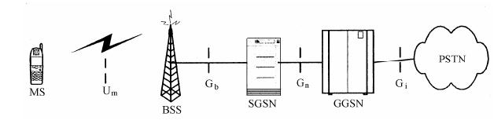

基础知识：GSM/GPRS
1. GSM
全球移动通讯系统（Global System for Mobile Communications)
2. GPRS
通用分组无线业务(General Packet Radio Service) GPRS是在GSM系统基础上发展起来的分组数据承载和传输业务,GSM是一种电路交换系统，而GPRS是一种分组交换（包交换）系统。
关于GPRS这里简单介绍它的几个简单的重要知识，更多详细请自行找资料学习
（1）GPRS服务种类
GPRS服务种类分为Class A/B/C，
- Class A：是能同时支持电路交换和分组交换（即可以同时打电话和上网）
- Class B：支持电路交换和分组交换，但是只能同时进行一种
- Class C：只支持分组交换
（2）GPRS的传输类型
GPRS网络为每个用户分配最多8个时隙来传输数据，这最多8个时隙又由上行和下行组成，具体分为以下几类：
- Class 2：下行2，上行1 （简称2+1）
- Class 4：下行3，上行1 （简称3+1）
- Class 8：下4，上行1 （简称4+1）
- Class 10：下行4，上行2 （简称4+2）
- Class 12：下行4，上行4 （简称4+4）
这里需要注意的是Class 8/10/12并不是指有8/10/12个信道可以使用，它们的总信道都只有5个，这里的分类说明了最大可以使用的上行信道和下行信道数。
GPRS传输速度：理论上class值越大速度越快，但是速度受基站和GPRS设备（GPRS模组、手机）双方的最低速度限制，比如GPRS设备支持Class 12，但是基站只支持Class 10，那就会收到Class 10限制，而且和编码方式、信号、干扰等因素也有关系。
（3）GPRS编码方式
GPRS定义了CS-1到CS-4四种信道编码方式，不同编码方式速率不同，纠错能力也不同。编码方式越低，纠错能力越强，但是速率越低，所以在信号越好的地方使用更高的编码方式。
（4）GPRS建立数据通信流程


GPRS设备连接基站并注册(register)到网络，保证有足够强的信号,此时便可以使用GSM服务，即可以通话、短信。
GPRS附着（Attach）：建立GPRS设备到GPRS网络的通信信道，实际上是附着到SGSN(serving GPRS support node)上。
GPRS PDP Context(分组报文协议上下文)激活：可以将这一步看作是GPRS设备从网关拿到IP地址，经过这一步设备便具有数据通信功能,能够与公网设备建立通信。 GGSN(gateway GPRS Support Node)是GPRS网络中的关键部分，是GPRS网络和外部分组交换网络之间的交互，从外部网络来看，GGSN就是一个子网路由器，负责交换SGSN与外部网络之间的信息，还负责认证、流量计费等功能。
与公网设备建立连接：因为设备已经建立好于公网的连接，只需要直接通过某种协议连接即可，比如建立TCP连接、UDP连接等
IMEI SN IMSI CCID区别
SN是模块序列号,一般情况可以不用理会
IMEI是设备号码,全球唯一,会发送到基站网络进行校验,在一些地区如果IMEI号码错误可能导致无法联网
IMSI： International Mobile SubscriberIdentification Number 国际移动用户识别码，是区别移动用户的标志，储存在SIM卡中，可用于区别移动用户的有效信息。其总长度不超过15位，同样使用0～9的数字。其中MCC是移动用户所属国家代号，占3位数字，中国的MCC规定为460；MNC是移动网号码，最多由两位数字组成，用于识别移动用户所归属的移动通信网；MSIN是移动用户识别码，用以识别某一移动通信网中的移动用户。例如开头是46000是中国移动用户，46001是联通用户，46003是电信用户
ICCID：Integrate circuit card identity 集成电路卡识别码（固化在手机SIM卡中),ICCID为IC卡的唯一识别号码，共有20位数字组成